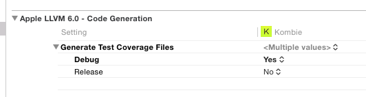
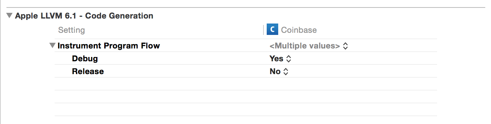
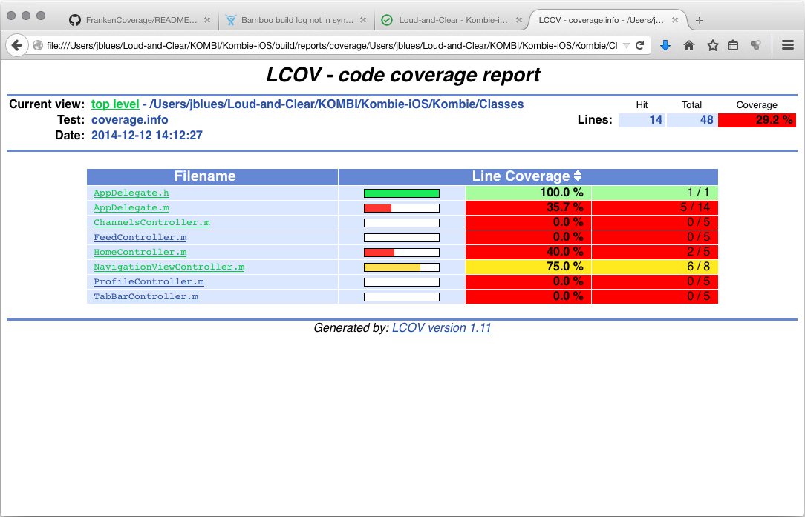

Generating a code coverage report for iOS and OSX projects requires a mish-mash of tools and steps. Here we've glued them all together into something that (hopefully) just works.
The script itself can be run remotely, but we'll first need to install dependencies . . .
$ brew install groovy
$ brew install lcov
$ sudo port install groovy
$ sudo port install lcov
Set your main App target to produce test coverage output (debug mode only).
Set your main App target to instrument program flow (debug mode only).
Run your tests from Xcode or AppCode, and then produce a coverage report with:
groovy http://frankencover.it/with -source-dir MyProject/Classes
Create a build script, as follows:
#!/bin/sh
# First Run Tests
xcodebuild test -workspace MyProject.xcworkspace/ -scheme 'MyProject' -configuration Debug \
-destination 'platform=iOS Simulator,name=iPhone 5s,OS=8.1' | xcpretty -c --report junit
#Above we're piping output through xcpretty, which is not required but very nice!
#(gem install xcpretty)
# Now Produce Test Coverage Report
groovy http://frankencover.it/with -source-dir MyProject/Classes -required-coverage 85
#Above we set required coverage to 85%. Build fails if coverage falls below this value.
. . . and run it with
$ sh build.shReports are located at ${outputDir}/coverage/index.html
Using the hosted script has an advantage in that it alleviates the need to update for new features or bug fixes, however if you prefer not to run a remote script, it can be installed locally with:
curl http://frankencover.it/with > FrankenCover && chmod +x FrankenCoverAlternatively, to review the contents of the script prior to execution, use:
curl http://frankencover.it/with | moreApache License, Version 2.0, January 2004, http://www.apache.org/licenses/
The frankencover.it script just moves a bunch of files into the right place and runs some commands on them, hopefully saving you the time of having to read the detailed documentation and run manual steps. The real heavy-lifting is being done by the awesomeness of clang and lcov.
This site is hosted on GitHub pages, and the web template was kindly provided by mattgraham